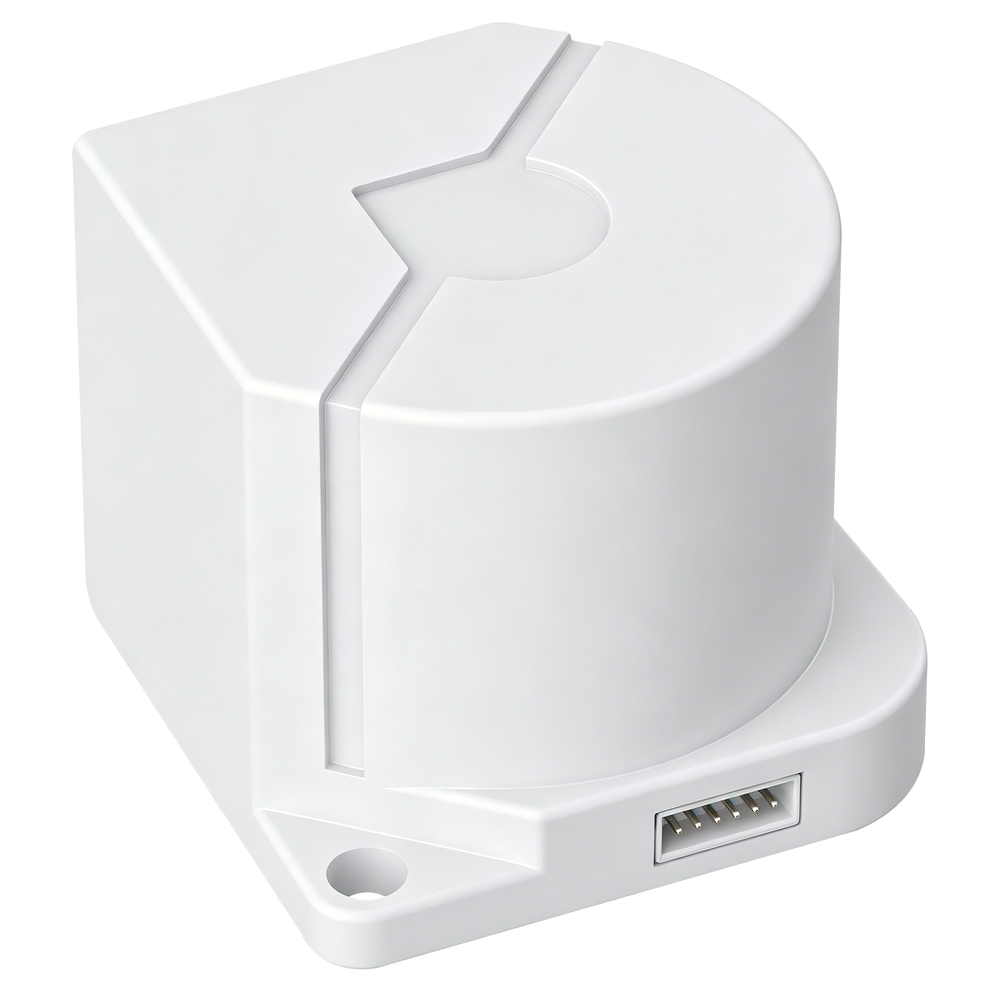
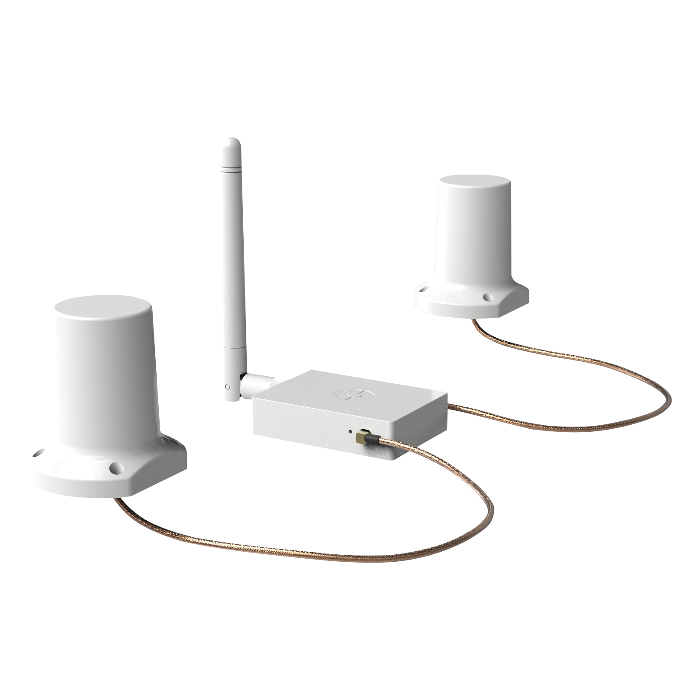
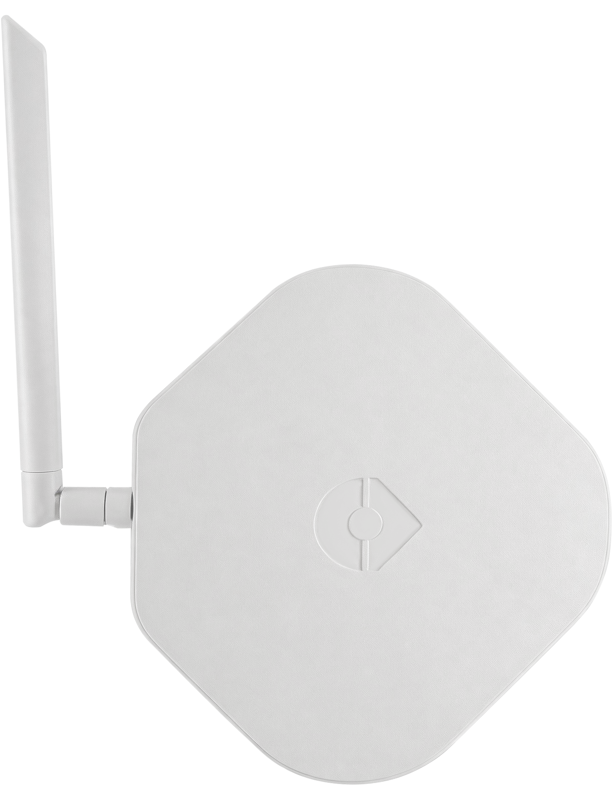
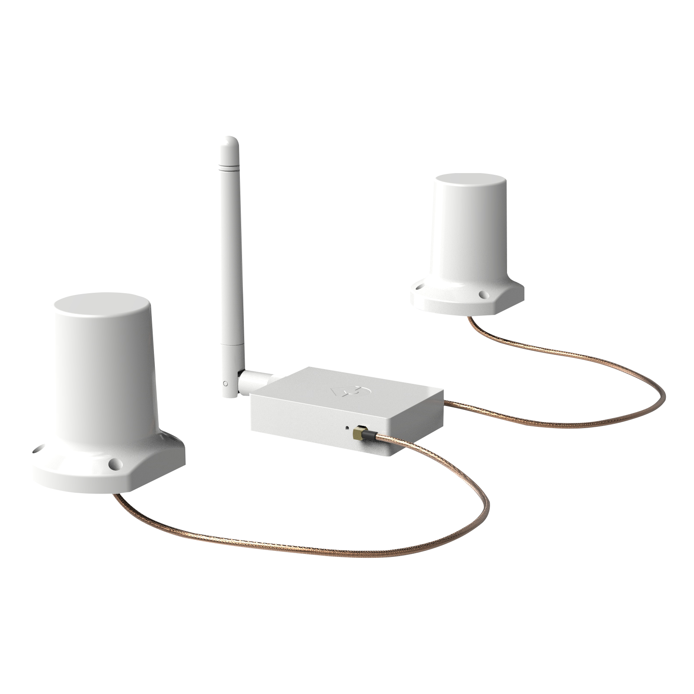

移动站管理
移动站数量：0| 移动站序列号 | 定位状态 | 在线状态 | 卫星数 | 经度 | 纬度 | 高度 | 更新时间 | 操作 |
|---|
暂无移动站信息
通信指令
暂无发送指令
通过USB-TTL接入RTK设备，然后点击连接





| 移动站序列号 | 定位状态 | 在线状态 | 卫星数 | 经度 | 纬度 | 高度 | 更新时间 | 操作 |
|---|
暂无发送指令
| 移动站序列号 | 定位状态 | 在线状态 | 卫星数 | 经度 | 纬度 | 高度 | 速度 | 更新时间 | 轨迹点数 |
|---|